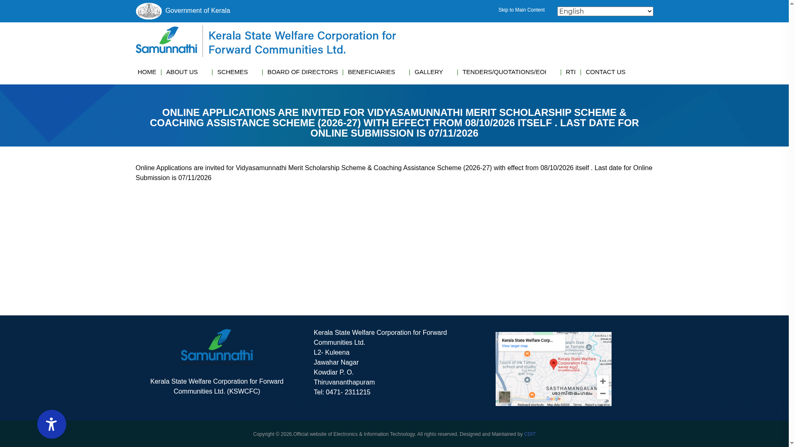
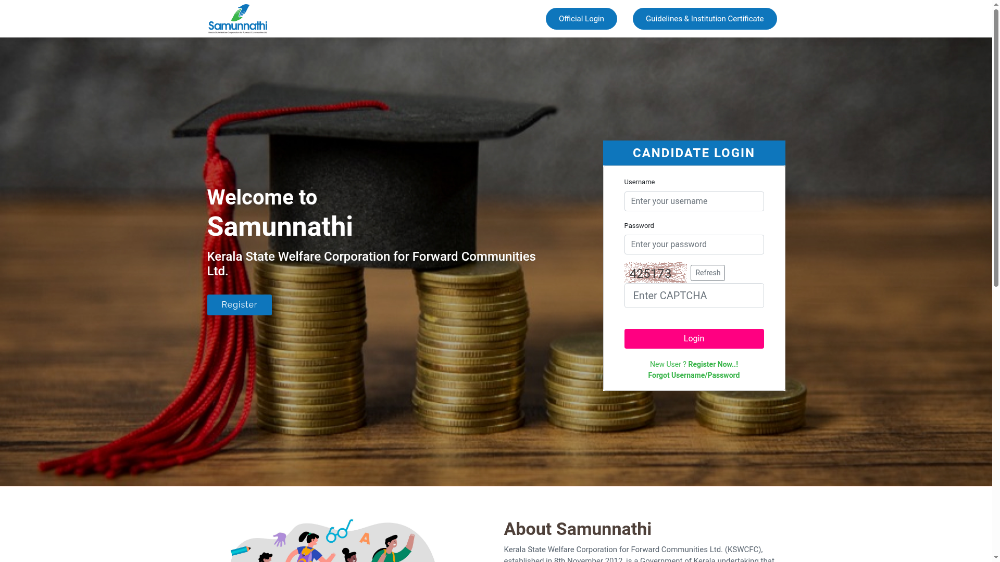

Vidyasamunnathi Coaching Assistance 2026-27: up to Rs 30,000 for exam coaching, apply by 7 November
The Kerala State Welfare Corporation for Forward Communities (KSWCFC) opened online applications for the Vidyasamunnathi Coaching Assistance Scheme 2026-27 on 8 October 2026, and the last date for online submission is Saturday, 7 November 2026. The scheme reimburses coaching fees paid for competitive-exam preparation: up to Rs 6,000 for PSC/Bank/UPSC/SSC coaching, up to Rs 8,000 for NET, SET, CTET and KTET coaching, and up to Rs 15,000, Rs 25,000 and Rs 30,000 for Civil Services Prelims, Mains and Interview coaching respectively. It is open to students from economically backward sections among the forward communities in Kerala whose family annual income is below Rs 4,00,000.
Who can apply
The eligibility rules below are from KSWCFC's official 2026-27 guideline PDFs published on its application portal:
- Students belonging to the economically backward sections among the forward communities, resident in Kerala and studying in educational institutions in Kerala.
- Family annual income below Rs 4,00,000. The application needs a family income certificate issued by the Village Officer that includes the applicant and is in the name of the applicant, father, mother or guardian; individual annual income certificates are not accepted.
- You must be attending regular, in-person coaching at the institution - the guidelines state that assistance is not allowed for online coaching.
- For PSC/Bank/UPSC/SSC coaching, the institution must have government approval or a licence, or be registered under the Companies Act.
- You must hold the basic eligibility prescribed for the exam you are being coached for. For Civil Services coaching, applicants must have the eligibility to write the Civil Services Examination, and the maximum age is 32. For Mains coaching assistance, the UPSC Prelims roll number and the institution certificate are required.
- Applicants who received coaching assistance under this scheme in an earlier year cannot apply again.
Amount and how it is paid
- PSC/Bank/UPSC/SSC coaching: up to Rs 6,000.
- Eligibility-test coaching for NET, SET, CTET, KTET and similar tests (departmental eligibility tests excluded): up to Rs 8,000.
- Civil Services: up to Rs 15,000 for Prelims coaching (funding capped at 40 candidates), up to Rs 25,000 for Mains coaching (10 candidates), and up to Rs 30,000 for Interview coaching (4 candidates who reach the Mains stage).
- All assistance is on a fee-reimbursement basis: only the coaching fee you actually paid is reimbursed, capped at these amounts. The guidelines also state that applicants with lower family income get priority, and the final amount is distributed after fee receipts are received.
- The amount is paid only to a bank account in the applicant's own name; the guidelines make the applicant responsible for any miscredit from a wrong or inactive account.
Key dates
- Online applications opened: 8 October 2026.
- Last date for online submission: 7 November 2026.

What about Medical, Engineering, LAW and CUET entrance coaching?
KSWCFC's standing scheme description also lists coaching for Medical, Engineering, LAW and CUET entrance examinations. As of 23 October 2026, the 2026-27 guideline PDFs published on the official application portal cover three categories: PSC/Bank/UPSC/SSC, Civil Services, and eligibility tests (NET/SET/CTET/KTET). No separate 2026-27 guidelines PDF for Medical/Engineering/LAW entrance coaching is posted yet; check the portal's guidelines page for updates before assuming that category is open this cycle.
How to apply: step by step
Applications are online only, through KSWCFC's scheme portal. The official guidelines state that the application and document copies should not be mailed to the corporation.
- Open schemes.kswcfc.org and register with your mobile number (New User / Register). A User Name and Password are sent to the registered mobile number. If you registered in a previous year, log in with your existing credentials.
- Log in and create your profile, then submit the application for the scheme through the profile.
- Upload the documents: your SSLC certificate (showing religion and caste), the family income certificate issued by the Village Officer, the certificate from the coaching institution in the format given on the website, a copy of the front page of your bank passbook with the account number and IFSC written clearly, and a copy of pages 1 and 2 of your ration card.
- Submit by 7 November 2026. Shortlisted applicants are informed by SMS and e-mail, and only they need to send the listed original documents to Kerala State Welfare Corporation for Forward Communities Ltd, TC9/476, L2, Kuleena, Jawahar Nagar, Kowdiar P.O., Thiruvananthapuram - 3.

Steps after login happen inside your own account, so they are not shown as screenshots. The institution certificate format for each category is linked on the portal's Guidelines & Institution Certificate page along with the 2026-27 guideline PDFs.
KSWCFC is also accepting applications for the Vidyasamunnathi Merit Scholarship 2026-27 (Rs 4,000 a year for Higher Secondary students) till 7 November 2026 - read our guide.
Video guides
We searched on 23 October 2026 for a step-by-step application video for the 2026-27 cycle in English and in Malayalam. The only relevant walkthrough we found is a 2020 Malayalam video made for an earlier application cycle, which we could not verify against the current portal, so we are not linking it rather than risk outdated instructions.
Help and contact
KSWCFC: phone 0471-2311215 or 6238170312, e-mail kswcfc@gmail.com. The guidelines page on schemes.kswcfc.org carries the 2026-27 guideline PDFs and institution certificate formats for each category.
Sources: KSWCFC application notice (8 October to 7 November 2026) · Vidyasamunnathi Coaching Assistance scheme page, KSWCFC · 2026-27 guidelines and institution certificates, official application portal · PSC/Bank/UPSC/SSC guidelines 2026-27 (PDF) · Civil Services guidelines 2026-27 (PDF) · Eligibility test guidelines 2026-27 (PDF). Checked 23 October 2026. Explainer by AiCoN - not a government publication. Details can change; check kswcfc.org before you apply.